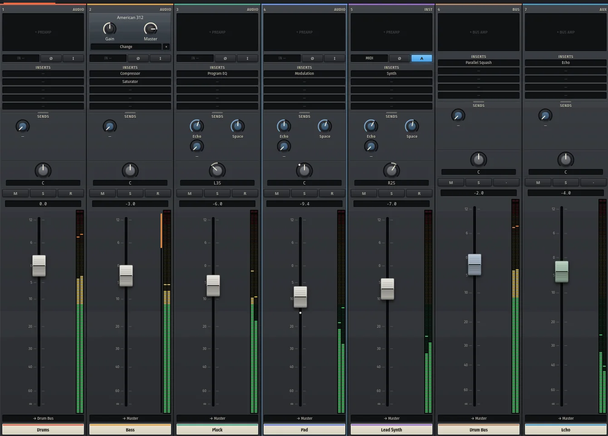
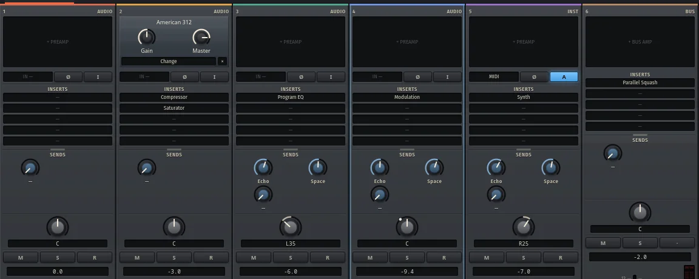
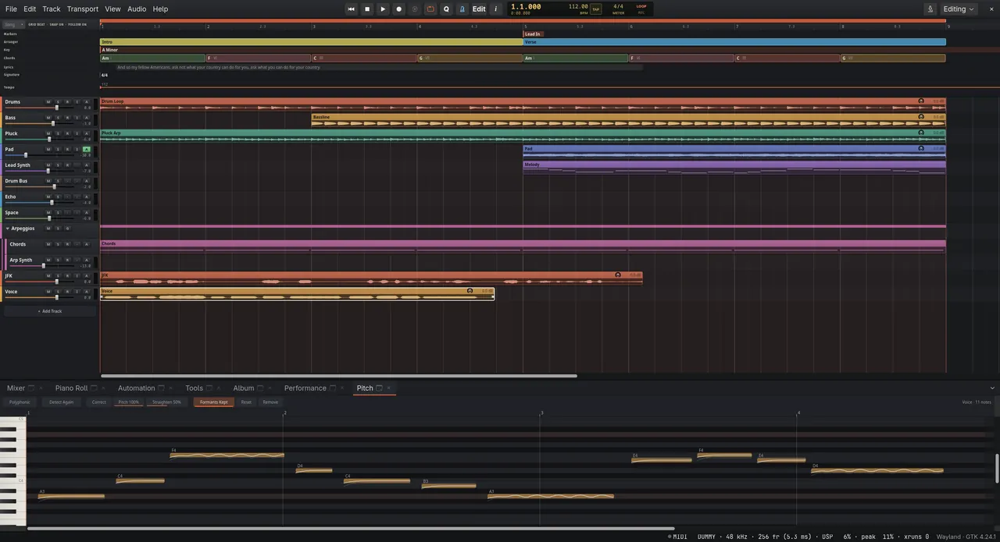
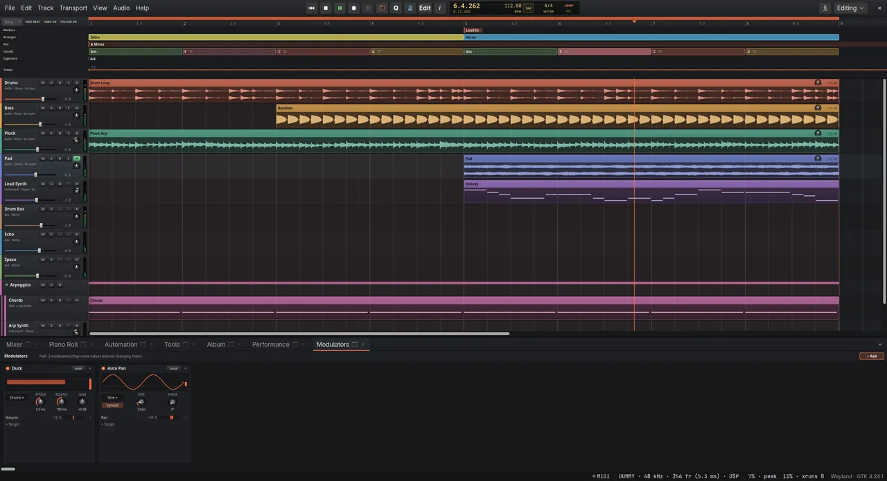
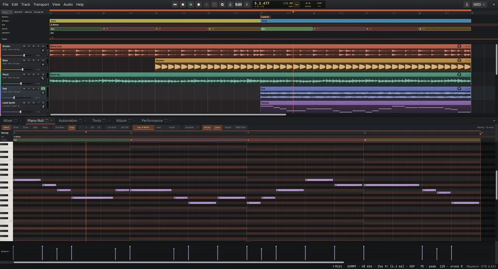
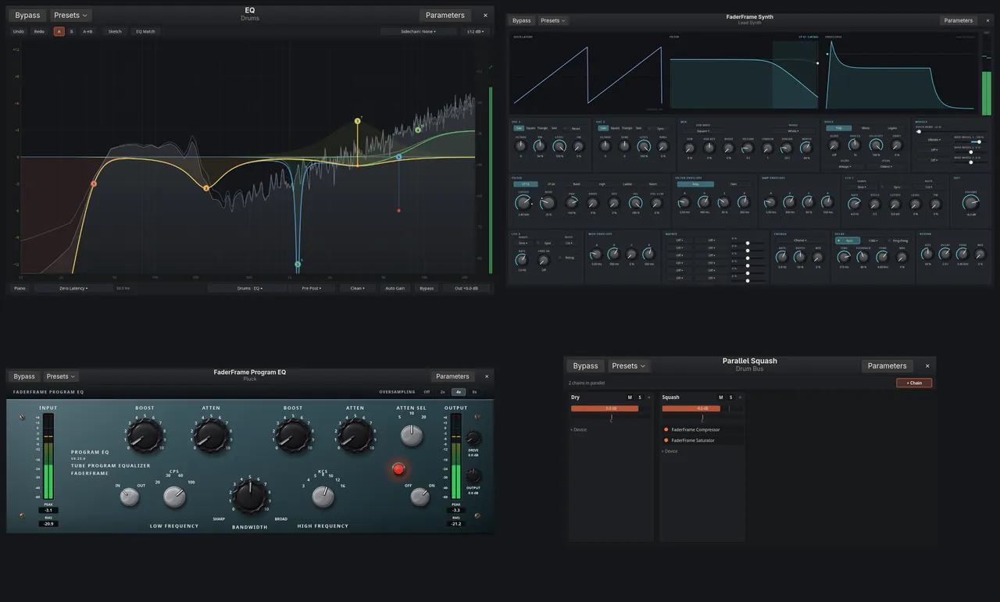
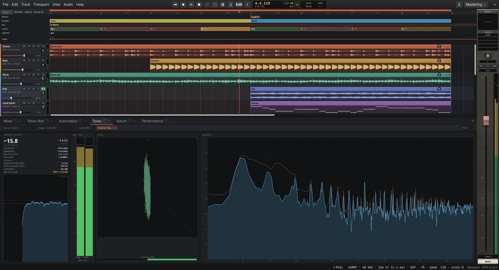
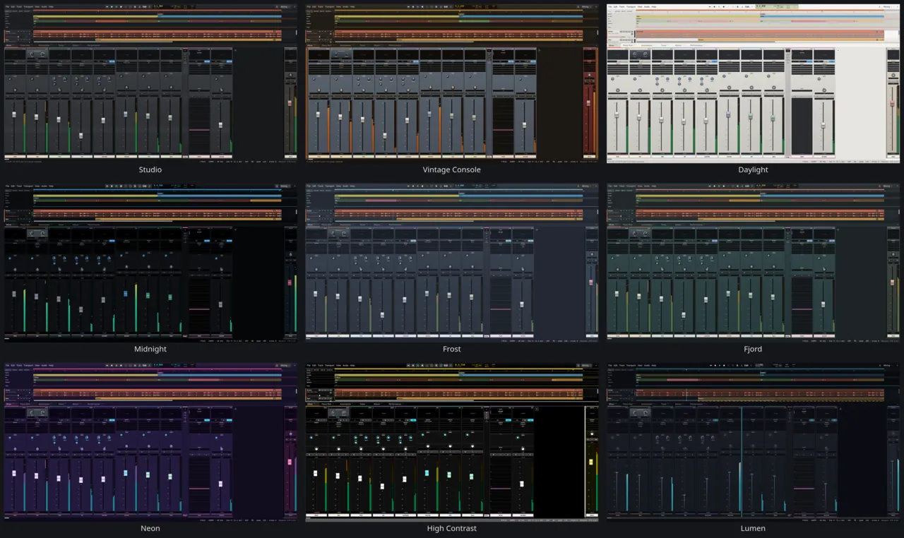

First take to vinyl master.
A free DAW in Rust: Linux first, macOS and Windows too.

- Latest release
- 0.30.0
- Released
Which of six builds is yours?
Builds of 0.30.0, released .
| System | Build | Good to know | Size | Download |
|---|---|---|---|---|
| Linux | Portable tarball | Debian 13 or newer (glibc 2.41) | 35.1 MB | Download the Linux portable tarball |
| Flatpak | Older distributions | 16.2 MB | Download the Linux Flatpak | |
| macOSNot notarised: allow it once in Privacy & Security | Apple silicon | 42.3 MB | Download for Macs with Apple silicon | |
| Intel | 46.1 MB | Download for Intel Macs | ||
| Windows | Installer | SmartScreen: More info, then Run anyway | 54.9 MB | Download the Windows installer |
| Portable zip | Runs from a USB stick | 80.1 MB | Download the portable Windows zip |
An American 312 on the bass?
Each strip runs top to bottom like a console channel.

- A preamp solved from its circuit; its Gain is the real gain.
- Inserts: stock devices, or CLAP, VST3, LV2 and Audio Units plugins.
- Sends to the Echo and Space returns, before or after the fader.
- A parallel container squashing a copy of the drum bus.
Can it tune a vocal too?

Sung notes snapped to the key, their sung pitch faint behind.

Markers, sections, the key and the chords sit above the tracks.

The piano roll under the chord track, the scale lit.

An EQ with dynamic and spectral bands, a synth, a Program EQ.

EBU R128 loudness, phase and spectrum, measured as you hear them.
Is it finished?
Not yet. Most of a working DAW is there.
| Version | Released | What changed |
|---|---|---|
| 0.30.0 | Comping changes only the section you click | |
| 0.29.0 | Plugin editor header on Windows and macOS | |
| 0.28.0 | Plugin GUIs under the editor header on Linux | |
| 0.27.0 | Clip drags no longer exhaust file handles | |
| 0.26.0 | Ripple editing per track, selection or project |
What opens on first start?
The demo: eight bars in A minor, every sound generated.
